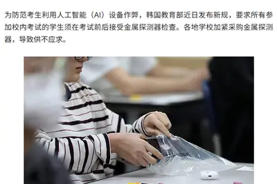
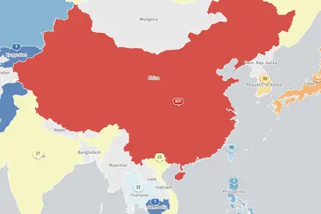
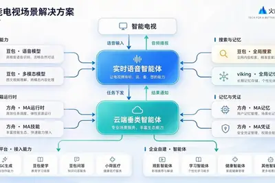
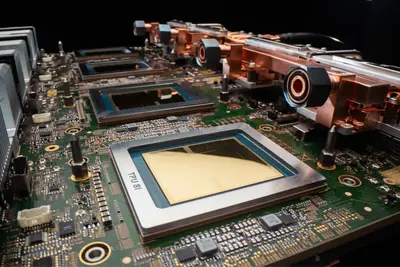
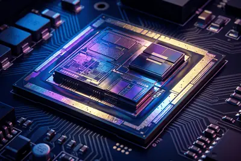
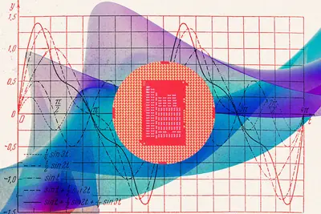
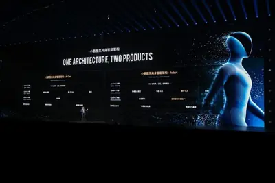
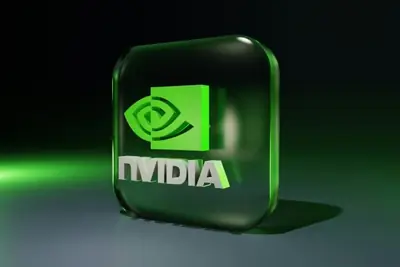
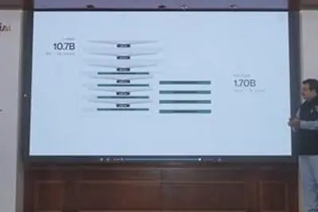

AI 每日新聞彙整
全部主題
其他
2 家媒體報導gpt-6.26.2openai
OpenAI 坦承 GPT-6.2 計費出錯，多數用戶更快達到使用上限
領導 OpenAI 核心產品與平台部門的 Thibault Sottiaux（Tibo）透過 X 貼文表示，O […]
- 科技新報 TechNews OpenAI 坦承 GPT-6.2 計費出錯，多數用戶更快達到使用上限
- iThome OpenAI修正GPT-6.2計費系統錯誤，Astra、Sol模型將更快用罄使用限額
openai
OpenAI 转守为攻：反诉苹果窃密，喊话“不公平竞争”
IT之家 11 月 28 日消息，《金融时报》昨日（11 月 27 日）发布博文，报道称在苹果公司提起的商业秘密诉讼中，OpenAI 公司已经提出反诉，指控苹果自身窃取了 OpenAI 的商业秘密，并涉嫌胁迫和威胁同时为两家公司供货的供应商。 苹果公司于 2026 年 7 月起诉 OpenAI，称前员工 Tang Tan 和 Chang Liu 离职后，将商业秘密带到了 OpenAI。 OpenAI 在反诉中称，一名员工曾从苹果跳槽至 OpenAI，工作六个月后又返回苹果，并通过个人账户带回了一款 OpenAI 硬件设备的详细资料。这些资料据称包括图片、
macgtapro
民间移植给力：苹果 M 芯片 Mac 已跑通《GTA 6》游戏，1080P 场景最高解锁 6FPS
IT之家 11 月 28 日消息，科技媒体 MacRumors 昨日（11 月 27 日）报道，尽管 Rockstar Games 没有推出官方 Mac 版本，但社区开发者已通过非官方项目， 成功在苹果芯片 Mac 上运行《侠盗猎车手 VI》（GTA 6）游戏。 开发者把游戏的 XBOX Series 版本非官方地移植到 macOS，一些用户反映可以探索场景并控制视角。不过，这些项目仍处于实验阶段，运行速度太慢，无法正常游玩。 其中，名为“Halfwave”的项目在配备 48GB 内存的 M4 Pro MacBook Pro 上，监狱场景的帧率约为每秒
chatgpt100business
全球首个：联想为部分 Win11 商用电脑预装 OpenAI ChatGPT，企业登录最高可领 100 美元优惠额度
IT之家 11 月 28 日消息，据 Windows Latest 今日报道，联想成为全球首家在部分 Windows 11 商用电脑上预装 ChatGPT 的 PC 厂商。 OpenAI 同时也针对符合条件的联想设备推出商业推广活动，企业用户通过预装的 ChatGPT 桌面应用登录或创建 ChatGPT Business 工作区，最高可获得每个席位 100 美元 （IT之家注：现汇率约合 667.5 元人民币） 的优惠额度。 联想目前已在部分新款 Windows 11 电脑上预装 ChatGPT，现阶段主要涉及商用机型，具体覆盖哪些产品系列尚未完全明确。
cloudgooglesafety
【Google Cloud 2027 資安展望報告】勒索集團轉向盜用算力，「LLMJacking」數小時內讓企業雲端帳單暴增
雲端服務業者 Google Cloud 發布《雲端首席資訊安全長展望：2027 年資安預測》（Cloud CISO Perspectives: Our security forecast for 2027），由 Google Cloud 資安長 Chris Betz 彙整 Google、Google Cloud 與 Mandiant（Google 旗下網路安全與威脅情報公司）團隊高階主管的最新威脅情資而成。 報告指出隨著企業全面邁入由自主代理（AI 代理軟體）驅動的新時代，傳統靠人力在背後盯著、只在系統門口設防線的舊做法已追不上機器的攻擊速度。企業必須將
- TechOrange 科技報橘 【Google Cloud 2027 資安展望報告】勒索集團轉向盜用算力，「LLMJacking」數小時內讓企業雲端帳單暴增
xaistatessue
States sue SpaceX to stop Grok from generating child sex images, revenge porn
Article URL: https://www.oag.state.va.us/media-center/news-releases/jay-jones/3162-attorneys-general-jones-and-rayfield-file-suit-against-spacex-parent-company-of-x-xai-and-grok-over-creation-and-promotion-of-child-exploitation-and-non-consensual-images-on-platform Comments URL:
防考生利用 AI 作弊，韩国学校抢购金属探测器
IT之家 11 月 27 日消息，据央视新闻报道，为防范考生利用人工智能（AI）设备作弊，韩国教育部近日发布新规，要求所有参加校内考试的学生须在考试前后 接受金属探测器检查 。各地学校加紧采购金属探测器，导致供不应求。 报道提到，一家生产便携式金属探测器的韩国厂商 27 日表示，客户咨询数量较往常增加了约 100 倍，公司大幅提升产量，仍难以满足需求。另一厂商说，如果现在订购，需等待约半个月才能拿到货。一家线上商家也发布公告说，现货已售罄，预计下月初才会补货，目前只接受预订。 在买不到金属探测器的情况下，不少学校转而选择租用设备应急， 租赁公司接到的咨询

hospitalengineerclinical
This ER Doctor Became a Hospital’s First Clinical AI Engineer
When Boston Children’s Hospital posted a job listing for a prompt engineer in 2023, Dinesh Rai decided to apply. He didn’t expect to get the job. At the time, prompt engineering was being touted as one of the hot new jobs created by generative AI. Companies wanted people who knew
- IEEE Spectrum AI This ER Doctor Became a Hospital’s First Clinical AI Engineer
androiddiywidgets
Android’s DIY widgets are a bit of vibe-coding fun
Aside from dealing with my calendar, there's one thing I want AI to do: tell me if I'm about to miss the bus. What I need is a widget. It needs to tell me real-time arrivals for the bus stop near my house. Tapping around on my phone screen to open the right app and […]
- The Verge AI Android’s DIY widgets are a bit of vibe-coding fun
千里科技印奇：智驾业务将聚焦两至三家头部车企，从车型定义阶段参与开发
IT之家 11 月 27 日消息，据界面新闻报道，千里科技董事长、阶跃星辰董事长印奇在投资者交流会上表示， 千里科技未来将聚焦两至三家头部车企客户 ，从车型定义阶段参与开发，与车企共同设计智驾算法及芯片、传感器、域控制器等硬件配置。 印奇称 吉利是这一合作模式的代表性客户 。印奇表示，千里科技正与吉利推进不同品牌和车型的智驾硬件标准化，以减少重复开发，并利用量产车辆回传的数据迭代模型。 据IT之家此前报道， 千里科技 2026 年上半年实现营业收入 51.20 亿元 ，同比增长 22.36%；归属于上市公司股东的净利润为 0.78 亿元，同比增长 151
美团王兴：与微信小微合作按计划推进，预计明年 AI 资本开支将低于今年
IT之家 11 月 27 日消息，据每日经济新闻，对于市场关注的美团与微信小微的试点合作进展，美团 CEO 王兴在财报发布后的业绩电话会上表示， 双方合作正按计划推进 ，双方聚焦本地服务场景，优先打磨微信生态内完整服务链路。 王兴认为，微信 AI 能力叠加美团本地供给与履约能力， 有望挖掘微信生态内新的本地服务需求 。 在 AI 资本开支上，王兴表示，美团将坚持 ROI（投资回报率）导向、审慎投入。王兴透露， 今年已提前锁定部分算力资源，预计明年 AI 相关资本开支将低于今年 ，投入节奏服从整体财务规划，兼顾业务收益与推理成本，持续优化投入效率。 他同时
网信办：我国超 64% 成年公民具备初级及以上数字素养与技能，近半数具备人工智能素养
IT之家 11 月 27 日消息，国家互联网信息办公室今日发布《全民数字素养与技能调查报告（2026 年）》。 《报告》从总体情况、地区情况、群体情况等方面，系统分析了我国公民数字素养与技能发展水平及变化趋势。调查结果显示， 2026 年我国成年公民中具备初级及以上数字素养与技能的占比为 64.69% ，高级水平占比为 17.65%，较 2024 年分别增长 4.08 个和 1.39 个百分点，全民数字素养与技能发展总体呈良好态势。 从区域维度看，我国公民数字素养与技能发展水平呈现东部地区持续领跑、中部地区稳步跟进、西部地区加速追赶的发展态势。从城乡、年
opensource4200agent
近4,200個AI自主攻擊框架暴露於公開網路，臺灣也發現10個
開源AI自主攻擊框架逐漸成為新型網路威脅來源，攻擊者可利用這類工具串接大型語言模型（LLM）代理，自動執行網路偵察、漏洞探測及憑證蒐集等工作，大幅加快入侵速度，並降低發動攻擊所需的人力與技術門檻。

anthropic
美國算力管制與反蒸餾雙重夾擊：傳中國 AI 旗艦模型恐延宕，月之暗面取消印尼交易轉向歐洲租算力
美國商務部工業暨安全局（BIS）於 2026 年 11 月 19 日正式發布並實施臨時最終規則（Interim Final Rule, IFR）《Addressing Remote Access to Advanced Semiconductors》，將算力管制延伸至海外資料中心。與此同時，綜合《Reuters》與相關外媒報導，OpenAI 與 Anthropic 也同步收緊針對「模型蒸餾（Distillation）」的技術防線。在硬體算力租賃與訓練資料取得雙重受限下，智譜 AI（Z.AI）與月之暗面（Moonshot AI）等中國 AI 開發商的下一代
- TechOrange 科技報橘 美國算力管制與反蒸餾雙重夾擊：傳中國 AI 旗艦模型恐延宕，月之暗面取消印尼交易轉向歐洲租算力
tclbytedance
字节火山引擎：豆包大模型已服务八成国内头部电视厂商，创维、长虹、海信、TCL 等推出量产电视
IT之家 11 月 27 日消息，字节火山引擎今日宣布，目前， 豆包大模型已服务八成国内头部电视厂商， 创维、长虹、海信、TCL 等主流品牌，都推出了搭载豆包大模型的量产电视。 围绕豆包大模型版电视，火山引擎提供模型与接入支持，厂商完成硬件和系统适配，抖音电商提供渠道与内容营销支持。 实时语音智能体负责与用户交流： 通过豆包语音模型、多模态模型理解需求，借助搜索、技能与记忆能力处理请求、衔接上下文。想查信息，可以调用搜索；想做内容，可以调用生成服务。相比传统“语音识别 + 小模型意图路由”的方案，大模型能更准确地理解用户意图，语气和情感表达也更自然。用户

AI 仍供不應求，主計總處估明年出口破 1 兆美元創新高
主計總處今天公布最新經濟預測，儘管人工智慧（AI）產業發展存在變數，市場依舊供不應求，估今年商品出口突破 9, […]
- 科技新報 TechNews AI 仍供不應求，主計總處估明年出口破 1 兆美元創新高
3.0
支付宝车载助手 3.0 与 80 多家车企达成定点合作，含比亚迪、理想、奇瑞等
IT之家 11 月 27 日消息，支付宝今日发布“支付宝车载助手 3.0”，官方称其为 AI 原生车载智能体，让汽车座舱从“会聊天”升级到“能办事”。 IT之家从官方信息获悉，目前已有 80 多个汽车品牌与支付宝车载助手 3.0 达成定点合作， 比亚迪、理想、奇瑞、神行者、东风奕派、东风风神、深蓝、北汽极狐 等品牌的相关车型陆续量产交付，极氪等多个品牌将在广州车展后启动 OTA 升级。 据介绍， 点外卖、购电影票、加油、高速通行 等服务正在进入汽车座舱。用户无需反复打开不同 App、搜索服务或手动查单，从语音提出需求到完成下单、支付，车载助手可一站式完成
tpuhbm5512
曝谷歌第 10 代 TPU 芯片将配备 512GB 定制 HBM5 内存
IT之家 11 月 27 日消息，韩媒 Economy Tribune 当地时间今日爆料称， Google（谷歌）计划为其第 10 代 TPU 芯片配备 512GB 的定制 HBM5 内存 。 谷歌 TPU 是当前最主要的 AI ASIC 产品，其规格可作为窥视未来 AI 芯片竞争的窗口。 从各位消息人士的近期泄露来看， TPU 10 当下指的是代号 "Quillfish" 的项目 ，预计由联发科技 (MediaTek) 负责设计服务工作，有望继续采用 Intel（英特尔）的 EMIB-T 先进封装，量产时间点落在 2029 年。由于还有约 3 年的时间

2028nvidiaubs
美出口限令加速轉變！瑞銀：中國產 AI 晶片 2028 年市占率將突破 88%
近期輝達風暴引發外界對美國晶片出口管制的關注，加速中國發展自主半導體的決心。根據瑞銀（UBS）預測，中國每年國 […]
- 科技新報 TechNews 美出口限令加速轉變！瑞銀：中國產 AI 晶片 2028 年市占率將突破 88%
anthropicclaudesabotaging
Claude sabotaging ML research tasks?
Article URL: https://twitter.com/RealAstropulse/status/2126119408997466389 Comments URL: https://news.ycombinator.com/item?id=50664325 Points: 554 # Comments: 279
- Hacker News (100+) Claude sabotaging ML research tasks?
safety
雲端安全聯盟提出AI治理框架整合指引，強調模型安全測試與執行過程可追溯性
國際非營利資安組織雲端安全聯盟（CSA）近期發布企業AI成熟度指引，提出整合3套AI治理框架的做法，建議企業從AI系統原型開發階段就納入模型安全措施，定期檢測模型漏洞，並評估模型抵禦對抗性攻擊的能力，同時建立追蹤機制，以利查明AI系統的執行過程及各項作業所使用的身分。
日本提國防 AI 願景，判斷與責任由人類承擔
日本防衛省（相當於國防部）今天上午發布運用人工智慧（AI）有關的基本方針「防衛 AI 願景」，內容強調，在軍事 […]
- 科技新報 TechNews 日本提國防 AI 願景，判斷與責任由人類承擔
hbm
掌握 AI 晶片測試與日系航太專案！英柏得科技預計 12 月中掛牌上市
英柏得科技今日舉辦股票上市前業績發表會，預計 12 月中以半導體類股掛牌交易，董事長林傳生表示，受惠記憶體市場 […]
- 科技新報 TechNews 掌握 AI 晶片測試與日系航太專案！英柏得科技預計 12 月中掛牌上市
nvidia
美收緊先進 AI 晶片出口管制，東南亞 AI 基礎建設面臨考驗
新加坡今天表示，正與本地企業「進行協商」，以了解美國收緊對輝達（Nvidia）設計的先進人工智慧（AI）晶片出 […]

- 科技新報 TechNews 美收緊先進 AI 晶片出口管制，東南亞 AI 基礎建設面臨考驗
usinglightbreed
A New Breed of Chip Runs AI Models Using Waves of Light
German company Q.ANT is trying to cut the amount of energy required to run AI models by using light to perform the toughest calculations.

datacenternvidiacompute
美國防堵中國租用遠端算力，新規加查緝爭搶 AI 競賽優勢
美國政府更新出口管制規定，防堵中企透過馬來西亞等地的海外資料中心，自遠端租用輝達晶片算力；同時增派官員打擊走私 […]
- 科技新報 TechNews 美國防堵中國租用遠端算力，新規加查緝爭搶 AI 競賽優勢
nvidia
川普稱黃仁勳絕非國安威脅，稱助他復職對世界是件好事
美國總統川普今天表示，他已掌握足夠資訊，足以認定輝達（Nvidia）執行長黃仁勳絕非國家安全威脅。他還說，政府 […]
- 科技新報 TechNews 川普稱黃仁勳絕非國安威脅，稱助他復職對世界是件好事
microsoftrobot
機器人 ChatGPT 時刻何時爆發？工研院、微軟、NVIDIA 深度拆解三個關鍵
Foxconn 鴻海科技集團與 TechOrange 科技報橘日前於「HHTD 鴻海科技日」聯合舉辦「台灣 AI 機器人產業開發大會」，其中的壓軸對談邀請到工研院副院長胡竹生、台灣微軟資深策略業務發展總監章恩齊，與 NVIDIA 資深解決方案架構師劉冠良共同探討「AI Robot 的GPT 時刻何時爆發？」，歸納整場對談內容，若機器人要迎來 ChatGPT 時刻，至少有三個關鍵，而每一道關鍵，都藏著台灣的機會。 第一個關鍵：機器人的大腦 胡竹生指出，雲端大模型雖然進展快速，但要落地到機器人身上，首先就會遇到一個現實難題：機器人不可能每執行一個動作，就把資
- TechOrange 科技報橘 機器人 ChatGPT 時刻何時爆發？工研院、微軟、NVIDIA 深度拆解三個關鍵
ironcnbcrobot
小鵬人形機器人明年量產、先當門市店員，顧宏地：商用站穩後 1～2 年才考慮進家庭
中國電動車廠小鵬汽車 11/25 在廣州科技日展示新一代人形機器人 IRON，計畫明年先讓它在自家汽車門市以店員身分受訓。至於何時能走進一般家庭，小鵬聯席總裁顧宏地（Brian Gu）11/26 接受《CNBC》訪問時表示：「也許在成功部署到商用場域之後，大概再一兩年，我們就能開始考慮部署到家庭環境。」他也說，技術正快速推進。 小鵬描繪的是一條從門市走向家庭的路線。不過放大到整個產業，中國廠商的人形機器人出貨量雖然領先全球，多數機器人仍用在研究教育、展演與資料蒐集；業界主管與研究人員也指出，中國業者的硬體雖略為領先，機器人卻還缺乏勝任通用工作的智慧。 7

- TechOrange 科技報橘 小鵬人形機器人明年量產、先當門市店員，顧宏地：商用站穩後 1～2 年才考慮進家庭
regulationdatacenter
西班牙要求大型資料中心符合能源與水效率標準，強化AI算力基礎建設的永續監管
西班牙政府近期通過《Real Decreto 1032/2026》，以規範資料中心的能源永續、環境要求、韌性與數位主權條件，並由西班牙生態轉型與人口挑戰部（MITECO）公布相關內容。新的法規要求大型資料中心必須符合新的能源與環境標準，才能取得電網接入資格，適用對象包括電力容量超過10MW的資料中心。
cds2007funding
AI 狂潮暗藏 2007 年次貸翻版！大賣空貝瑞示警：CDS 已拉響信用警報
當全球資本市場仍聚焦 AI 晶片供不應求、算力需求能否持續變現之際，華爾街最著名的逆向投資人之一、電影《大賣空 […]
- 科技新報 TechNews AI 狂潮暗藏 2007 年次貸翻版！大賣空貝瑞示警：CDS 已拉響信用警報
metaamazonmccarthy
AI 購物助理迎假期大考：Google、Meta、OpenAI 搶進，Amazon 築牆護今年逾 800 億美元廣告事業
Google、Amazon、Meta 與 OpenAI 都想幫消費者挑選節慶禮物。《Bloomberg》近日報導，今年美國假期購物季將是 AI 購物助理的一次考驗，檢驗購物者最終會採納誰的建議；另一篇報導則指出，顧客與雇主都把 AI 帶進實體門市，讓零售員工面臨新的挑戰。 馬里蘭大學 42 歲的行銷學教授 Daniel McCarthy 熱愛跑步，某天滑 Instagram 時，看到鎖定腳踝無力運動員的廣告，產品標榜能強化足部與腳踝力量。McCarthy 沒有直接購買，而是把廣告截圖貼到 ChatGPT，詢問這項商品值不值這個價格、有沒有更好的選擇。Ch
- TechOrange 科技報橘 AI 購物助理迎假期大考：Google、Meta、OpenAI 搶進，Amazon 築牆護今年逾 800 億美元廣告事業
digitimestodaynvidia
DIGITIMES Today：NVIDIA黃仁勳復職爭議未解？| 穎崴AI測試介面仍供不應求 | 中國晶圓廠大搶成熟製程設備
早安，這裡是編輯中心。

nvidiacompute
美國新規堵漏洞，輝達晶片買家恐禁租算力予中企
美國總統川普政府宣布限制遠端存取人工智慧（AI）晶片的新規後，消息人士透露，新興雲端服務供應商已接獲通知，若將 […]
- 科技新報 TechNews 美國新規堵漏洞，輝達晶片買家恐禁租算力予中企
amdnvidiadell
NVIDIA 暫停東南亞四國伺服器出貨，美國新規把「算力給誰用」納入許可審查
據《金融時報》與《華爾街日報》報導，NVIDIA 已要求製造夥伴，暫停把搭載其晶片的伺服器出貨到馬來西亞、新加坡、泰國與印尼，期限未定。這一步發生在美國商務部新規於美國時間 11/19 生效之後：新規除了管制晶片運送到哪裡，也把海外資料中心替哪些企業提供算力，明確納入許可審查。 台灣 AI 伺服器供應鏈也可能受到波及。集邦科技（TrendForce）評估，短期內台廠出到東南亞的伺服器，客戶會更集中在美系雲端業者，承接其他客戶的訂單則要多過一道許可審查。不過，管制該收緊到什麼程度，各方看法不一：晶片製造設備龍頭 ASML 執行長富凱（Christophe

- TechOrange 科技報橘 NVIDIA 暫停東南亞四國伺服器出貨，美國新規把「算力給誰用」納入許可審查
chariot-1intelchariot
印度主權AI計畫再添新成果，Chariot-1從零訓練強化多語言能力
印度電子資訊科技部（MeitY）於11月26日宣布，由Chariot Artificial Intelligence開發的Chariot-1 Foundation Models正式推出。該模型是在印度政府推動主權AI計畫IndiaAI Mission支持下發展，Chariot Artificial Intelligence也是首批獲選開發主權基礎模型（Sovereign Foundation Models）的團隊之一。

elevencheckoutpay
美國 7-Eleven 把 AI 用進招募、結帳到設備維修，招人時間從 10 天縮到不到 3 天
在數位優先的零售環境下，美國連鎖便利商店巨頭 7-Eleven 透過人工智慧、數據整合與自動化技術全面改造門市與後勤營運，致力於大規模提升便利零售的服務水準。 導入電腦視覺與無摩擦結帳，優化門市結帳效率 在門市消費體驗方面，7-Eleven 已導入手機掃描付款、自助結帳，以及 AI 驅動的 Quick Checkout（QCO）等技術，讓顧客能透過不同方式完成購物，減少櫃檯排隊時間。 7-Eleven 也持續測試無摩擦結帳（Frictionless Checkout）技術，並在美國部分門市擴大 AiFi 電腦視覺技術的試點。顧客進入門市後，可使用手機掃描
- TechOrange 科技報橘 美國 7-Eleven 把 AI 用進招募、結帳到設備維修，招人時間從 10 天縮到不到 3 天